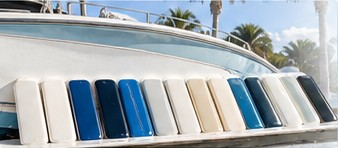
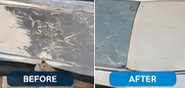
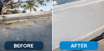
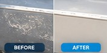
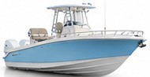

Scratch & Gouge Repair
Remove scratches, scuffs and gouges to restore a smooth, like-new finish.
Learn More

Restore the finish. Protect the fiberglass.
Get your boat looking right again.
We repair gelcoat scratches, chips, cracks, oxidation, fading, gouges, dock rash, trailer damage, impact damage, air voids and provide expert color matching across Tampa Bay.
Whether it’s a minor scratch or extensive cosmetic damage, we restore your boat’s finish with expert craftsmanship and color matching.
Remove scratches, scuffs and gouges to restore a smooth, like-new finish.
Learn More

Fix cracks and spider cracks before they spread or allow water intrusion.
Learn More

Repair impact damage, dock rash and trailer wear along hulls, gunwales and more.
Learn More
Gelcoat isn’t just about looks — it protects the fiberglass underneath. When it’s cracked, chipped or worn, water, UV rays and everyday stress can cause deeper damage that’s more expensive to repair.

We use proven techniques and marine-grade materials to ensure a seamless, long-lasting repair.
Assess the damage, determine the best repair method, and properly prep the surface.
Fill, shape and rebuild damaged areas using high-quality gelcoat and composite materials.
Use professional color matching systems to ensure an exact blend with your existing gelcoat.
Wet sand, compound and polish for a smooth, glossy, like-new finish.
Every boat is different. Gelcoat colors change over time due to UV exposure, weather, age, catalyst, temperature and the surrounding finish. We use professional color matching tools and experience to create a seamless blend that looks factory original.
Learn More About Color Matching



A gelcoat repair earns top marks when it cannot be found and stays that way for years. Like a fine meal, that starts with good ingredients, and the hardest ingredient to get right is the color. The newer the boat, the easier the match. After that, four things pull the cured color away from the number on the can.
That is why we keep hundreds of shades on the shelf, from off-whites through blues, browns, greens and reds, and why even the best gelcoat technicians do not always get it right the first time. It takes test batches and adjustment until the repair simply disappears.
We repair all types of gelcoat damage on boats of any size, from small cosmetic repairs to major restorations.

For over 50 years, Captain Levi’s has been the trusted choice for fiberglass and gelcoat repairs. Quality work, honest service, and real results.
We’re based in Largo and proudly serve boaters throughout Tampa Bay and Pinellas County, including:
Get a free quote or talk directly with Captain Dave.
Yes. We tint gelcoat to the boat’s current colour — not the factory code — because UV and age shift every finish. We test the mix on the hull before it goes on so the repair blends in.
Always. We open up each crack, find its cause, repair the fiberglass beneath if needed, and only then apply new gelcoat. Gelcoat over an unrepaired crack just cracks again.
Yes. Gouges that reach the laminate are ground out, filled with the right fiberglass or filler, then re-gelcoated, sanded and polished so the area is sealed and the repair disappears.
Most chips, scratches, dock rash and oxidation work can be done at your dock or trailer anywhere in Tampa Bay. Larger restorations are done at our Largo yard.
Surface scratches, chalking and small chips usually are. Cracks that keep returning, soft or flexing areas, or damage near fittings can point to a structural problem underneath — we check for that during the inspection.
Small chip and scratch repairs are often done in a day. Larger areas, colour-matched panels or full oxidation restoration can take several days, depending on size and cure time.
Have gelcoat damage you want looked at, need a quote, or ready to schedule? Fill out the form or give us a call — we’ll get back to you as soon as possible. Your boat deserves the best, and we’re here to make it happen.
Tell us about your boat and the damage. We’ll get back to you quickly.

Captain Levi is an AI assistant. Chats may be saved so our crew can follow up. Nothing here is a confirmed quote. Privacy